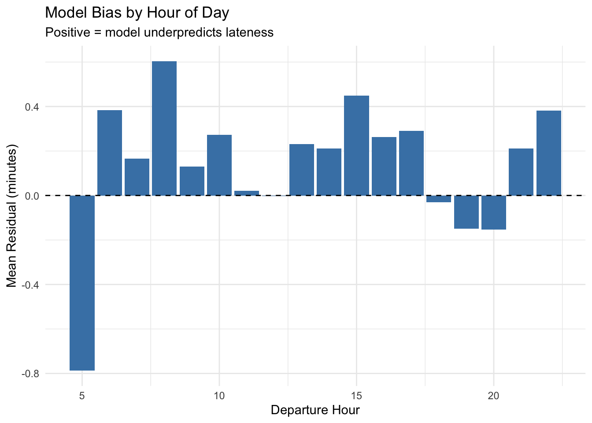

Code
options(scipen = 999)
if(!require(pacman)){install.packages("pacman"); library(pacman, quietly = T)}
p_load(tidyverse, sf, viridis, lubridate)Sujan Kakumanu
We’re working on cleaning up the baseline feature file for easier joining to AIS and Swiftly. Before then, doing some direct cleanup here.
We build a linear regression model to understand factors associated with arrival lateness. We use a temporal train/test split and time-based cross validation to prevent data leakage. Random cross validation is inappropriate here because trips close in time share similar conditions — a random split would allow the model to learn from the future.
p_load(tidymodels)
# Remove rows with NA outcome
model_data <- baseline_clean %>%
filter(!is.na(arr_late_min)) %>%
select(
arr_late_min,
dep_hour,
schedule_season,
schedule_daytype,
route,
direction,
stop_sequence,
vessel_capacity,
hdwy_prev_min,
turn_slack_sched_min,
prev_terminal_late_pos,
prev_stop_late_pos,
boardings_wake_obs,
onboard_obs,
date
)
nrow(model_data)[1] 599655 Min. 1st Qu. Median Mean 3rd Qu. Max.
-17.00000 -2.11667 -1.00000 -0.01588 1.00000 73.00000 # Group 10-fold cross-validation
# A tibble: 10 × 2
splits id
<list> <chr>
1 <split [501933/61066]> Resample01
2 <split [491790/71209]> Resample02
3 <split [498631/64368]> Resample03
4 <split [493674/69325]> Resample04
5 <split [498194/64805]> Resample05
6 <split [503460/59539]> Resample06
7 <split [492123/70876]> Resample07
8 <split [532013/30986]> Resample08
9 <split [529411/33588]> Resample09
10 <split [525762/37237]> Resample10model_rec <- recipe(arr_late_min ~ ., data = train_data) %>%
update_role(date, new_role = "id") %>%
update_role(cv_month, new_role = "id") %>%
step_impute_median(hdwy_prev_min, turn_slack_sched_min,
prev_terminal_late_pos, prev_stop_late_pos) %>%
step_dummy(all_nominal_predictors()) %>%
step_zv(all_predictors()) %>%
step_normalize(all_numeric_predictors())# A tibble: 3 × 6
.metric .estimator mean n std_err .config
<chr> <chr> <dbl> <int> <dbl> <chr>
1 mae standard 1.75 10 0.0395 pre0_mod0_post0
2 rmse standard 2.44 10 0.0799 pre0_mod0_post0
3 rsq standard 0.590 10 0.0210 pre0_mod0_post0# Drop cv_month before final fit
model_rec_final <- recipe(arr_late_min ~ ., data = train_data %>% select(-cv_month)) %>%
update_role(date, new_role = "id") %>%
step_impute_median(hdwy_prev_min, turn_slack_sched_min,
prev_terminal_late_pos, prev_stop_late_pos) %>%
step_dummy(all_nominal_predictors()) %>%
step_zv(all_predictors()) %>%
step_normalize(all_numeric_predictors())
lm_wf_final <- workflow() %>%
add_recipe(model_rec_final) %>%
add_model(lm_spec)
data_split <- make_splits(
list(analysis = which(model_data$date < ymd("2025-06-01")),
assessment = which(model_data$date >= ymd("2025-06-01"))),
model_data
)
lm_val_fit <- last_fit(lm_wf_final, split = data_split, metrics = metrics)
collect_metrics(lm_val_fit)# A tibble: 3 × 4
.metric .estimator .estimate .config
<chr> <chr> <dbl> <chr>
1 rmse standard 2.44 pre0_mod0_post0
2 rsq standard 0.571 pre0_mod0_post0
3 mae standard 1.80 pre0_mod0_post0# A tibble: 3 × 6
.metric .estimator mean n std_err .config
<chr> <chr> <dbl> <int> <dbl> <chr>
1 mae standard 1.75 10 0.0395 pre0_mod0_post0
2 rmse standard 2.44 10 0.0799 pre0_mod0_post0
3 rsq standard 0.590 10 0.0210 pre0_mod0_post0| route | rmse | mae | bias | n |
|---|---|---|---|---|
| RW | 3.42 | 2.35 | -0.17 | 2115 |
| GI | 3.17 | 2.45 | 2.21 | 298 |
| ER | 2.71 | 2.04 | 0.29 | 12187 |
| SB | 2.29 | 1.74 | 0.24 | 6933 |
| SV | 2.21 | 1.68 | 0.17 | 5323 |
| SG | 2.14 | 1.64 | -0.13 | 3067 |
| AS | 1.90 | 1.42 | 0.02 | 6733 |
val_predictions %>%
group_by(dep_hour) %>%
summarise(bias = mean(residual), .groups = "drop") %>%
ggplot(aes(x = dep_hour, y = bias)) +
geom_col(fill = "steelblue") +
geom_hline(yintercept = 0, linetype = "dashed") +
labs(title = "Model Bias by Hour of Day",
subtitle = "Positive = model underpredicts lateness",
x = "Departure Hour", y = "Mean Residual (minutes)") +
theme_minimal()
| schedule_season | schedule_daytype | rmse | bias | n |
|---|---|---|---|---|
| SUMMER_1 | WEEKEND | 2.56 | 0.16 | 3910 |
| SUMMER_1 | WEEKDAY | 2.43 | 0.22 | 23534 |
| SUMMER_1 | HOLIDAY | 2.40 | 0.03 | 9212 |
Overall performance — RMSE of 2.44 minutes, MAE of 1.80 minutes, and R² of 0.57 on the holdout set. The train/holdout gap is negligible, indicating the model generalizes well without overfitting.
By route — GI shows the largest bias (+2.21 min), meaning the model consistently underpredicts lateness there. RW has the highest error overall but near-zero bias, suggesting high variance the current features cannot capture. ER performs well despite being the highest ridership route.
By hour — Bias is small in magnitude across all hours (under 0.5 minutes). The model slightly overpredicts lateness at hour 5 and slightly underpredicts across most of the midday and afternoon window. No severe hourly failure.
By season and day type — The holdout covers only SUMMER_1 given the June 2025 test window. Weekends show slightly higher RMSE than weekdays, consistent with leisure travel adding unpredictability. Bias is small across all groups.
NEXT STEPS — GI underprediction points to factors not yet captured. AIS traffic features and weather/tide data could be areas of improvement, particularly for RW and GI.
---
title: "Modeling - Take 1"
format: html
author: Sujan Kakumanu
code-fold: show
---
```{r setup}
#| message: false
#| warning: false
options(scipen = 999)
if(!require(pacman)){install.packages("pacman"); library(pacman, quietly = T)}
p_load(tidyverse, sf, viridis, lubridate)
```
```{r setup-2}
baseline <- read.csv("../ridership_eda/baseline_model_stop_trip.csv")
```
## Cleanup of Baseline Data
We're working on cleaning up the baseline feature file for easier joining to AIS and Swiftly. Before then, doing some direct cleanup here.
```{r baseline-cleanup}
baseline_clean <- baseline %>%
filter(model_eligible == "True") %>%
mutate(
date = as.Date(str_extract(trip_key, "^\\d{4}-\\d{2}-\\d{2}")),
trip_id = str_extract(trip_key, "(?<=\\|)\\d+(?=\\|)"),
route = str_extract(trip_key, "(?<=\\|)[A-Z]+(?=\\|)"),
direction = str_extract(trip_key, "[A-Z]+$")
)
```
## Model Development
We build a linear regression model to understand factors associated with arrival
lateness. We use a temporal train/test split and time-based cross validation to prevent data leakage.
Random cross validation is inappropriate here because trips close in time share
similar conditions — a random split would allow the model to learn from the future.
### Data Preparation
```{r model-prep}
p_load(tidymodels)
# Remove rows with NA outcome
model_data <- baseline_clean %>%
filter(!is.na(arr_late_min)) %>%
select(
arr_late_min,
dep_hour,
schedule_season,
schedule_daytype,
route,
direction,
stop_sequence,
vessel_capacity,
hdwy_prev_min,
turn_slack_sched_min,
prev_terminal_late_pos,
prev_stop_late_pos,
boardings_wake_obs,
onboard_obs,
date
)
nrow(model_data)
summary(model_data$arr_late_min)
```
### Train/Test Split
```{r train-test-split}
# Temporal split: train on everything before June 2025, test on June 2025
train_data <- model_data %>% filter(date < ymd("2025-06-01"))
test_data <- model_data %>% filter(date >= ymd("2025-06-01"))
nrow(train_data)
nrow(test_data)
```
### Time-Based Cross Validation
```{r cv-folds}
# Leave one month out at a time — prevents leakage across time periods
train_data <- train_data %>%
mutate(cv_month = format(date, "%Y-%m"))
cv_folds <- group_vfold_cv(train_data, group = cv_month, v = 10)
cv_folds
```
### Recipe
```{r recipe}
model_rec <- recipe(arr_late_min ~ ., data = train_data) %>%
update_role(date, new_role = "id") %>%
update_role(cv_month, new_role = "id") %>%
step_impute_median(hdwy_prev_min, turn_slack_sched_min,
prev_terminal_late_pos, prev_stop_late_pos) %>%
step_dummy(all_nominal_predictors()) %>%
step_zv(all_predictors()) %>%
step_normalize(all_numeric_predictors())
```
### Model Specification and Workflow
```{r lm-workflow}
lm_spec <- linear_reg() %>%
set_engine("lm")
lm_wf <- workflow() %>%
add_recipe(model_rec) %>%
add_model(lm_spec)
```
### Fit with Cross Validation
```{r lm-fit}
control <- control_resamples(save_pred = TRUE)
metrics <- metric_set(rmse, rsq, mae)
lm_tuned <- fit_resamples(
lm_wf,
resamples = cv_folds,
control = control,
metrics = metrics
)
collect_metrics(lm_tuned)
```
### Validate on Test Set
```{r lm-validate}
# Drop cv_month before final fit
model_rec_final <- recipe(arr_late_min ~ ., data = train_data %>% select(-cv_month)) %>%
update_role(date, new_role = "id") %>%
step_impute_median(hdwy_prev_min, turn_slack_sched_min,
prev_terminal_late_pos, prev_stop_late_pos) %>%
step_dummy(all_nominal_predictors()) %>%
step_zv(all_predictors()) %>%
step_normalize(all_numeric_predictors())
lm_wf_final <- workflow() %>%
add_recipe(model_rec_final) %>%
add_model(lm_spec)
data_split <- make_splits(
list(analysis = which(model_data$date < ymd("2025-06-01")),
assessment = which(model_data$date >= ymd("2025-06-01"))),
model_data
)
lm_val_fit <- last_fit(lm_wf_final, split = data_split, metrics = metrics)
collect_metrics(lm_val_fit)
collect_metrics(lm_tuned)
```
## Model Validation - More Thorough
```{r extract-predictions}
val_predictions <- lm_val_fit %>%
collect_predictions() %>%
bind_cols(test_data %>% select(route, stop_sequence,
schedule_season, schedule_daytype,
dep_hour, vessel_capacity)) %>%
mutate(residual = arr_late_min - .pred)
```
```{r error-by-route}
val_predictions %>%
group_by(route) %>%
summarise(
rmse = sqrt(mean(residual^2)),
mae = mean(abs(residual)),
bias = mean(residual),
n = n()
) %>%
arrange(desc(rmse)) %>%
knitr::kable(caption = "Model Error by Route", digits = 2)
```
```{r error-by-hour}
val_predictions %>%
group_by(dep_hour) %>%
summarise(bias = mean(residual), .groups = "drop") %>%
ggplot(aes(x = dep_hour, y = bias)) +
geom_col(fill = "steelblue") +
geom_hline(yintercept = 0, linetype = "dashed") +
labs(title = "Model Bias by Hour of Day",
subtitle = "Positive = model underpredicts lateness",
x = "Departure Hour", y = "Mean Residual (minutes)") +
theme_minimal()
```
```{r error-by-season}
val_predictions %>%
group_by(schedule_season, schedule_daytype) %>%
summarise(
rmse = sqrt(mean(residual^2)),
bias = mean(residual),
n = n(),
.groups = "drop"
) %>%
arrange(desc(rmse)) %>%
knitr::kable(caption = "Model Error by Season and Day Type", digits = 2)
```
### Model Validation: Key Takeaways
**Overall performance** — RMSE of 2.44 minutes, MAE of 1.80 minutes, and R² of 0.57 on the holdout set. The train/holdout gap is negligible, indicating the model generalizes well without overfitting.
**By route** — GI shows the largest bias (+2.21 min), meaning the model consistently underpredicts lateness there. RW has the highest error overall but near-zero bias, suggesting high variance the current features cannot capture. ER performs well despite being the highest ridership route.
**By hour** — Bias is small in magnitude across all hours (under 0.5 minutes). The model slightly overpredicts lateness at hour 5 and slightly underpredicts across most of the midday and afternoon window. No severe hourly failure.
**By season and day type** — The holdout covers only SUMMER_1 given the June 2025 test window. Weekends show slightly higher RMSE than weekdays, consistent with leisure travel adding unpredictability. Bias is small across all groups.
**NEXT STEPS** — GI underprediction points to factors not yet captured. AIS traffic features and weather/tide data could be areas of improvement, particularly for RW and GI.